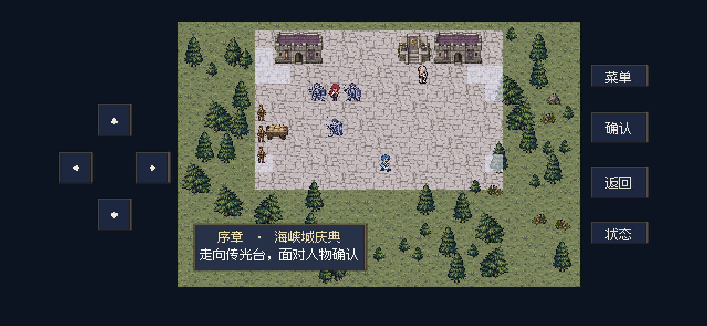
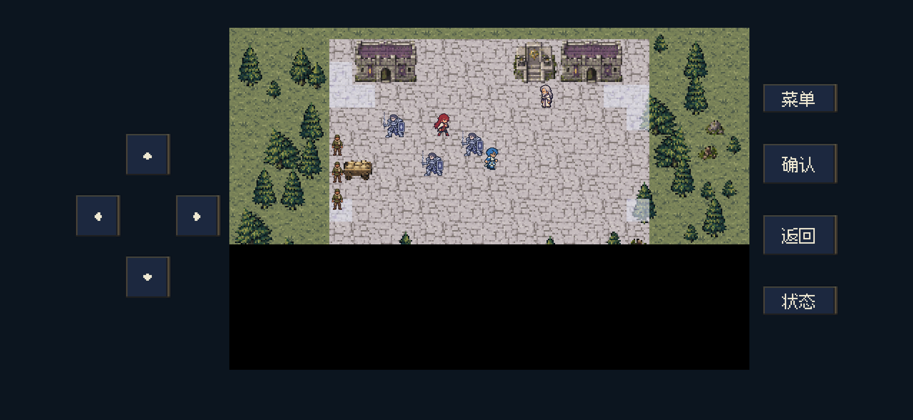
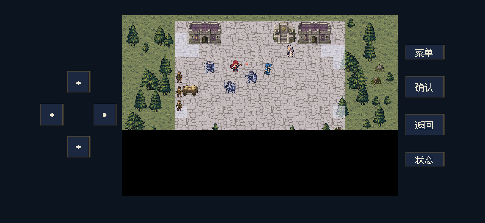
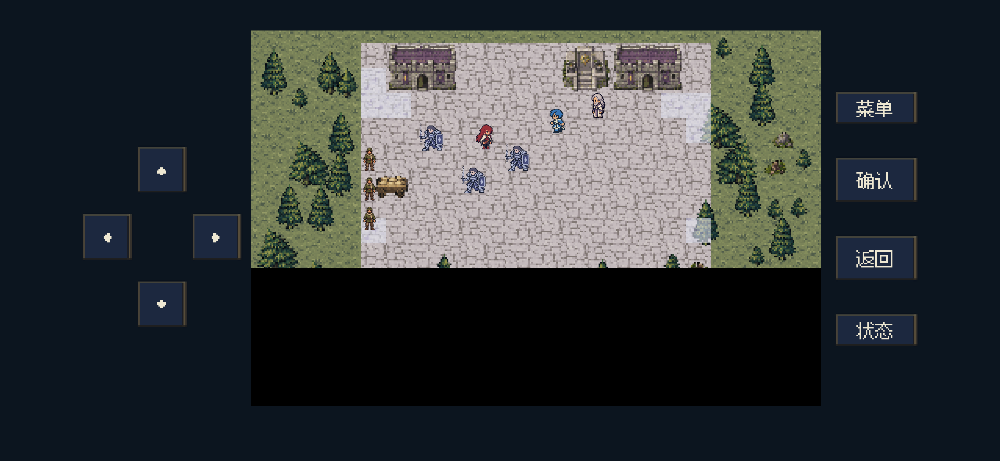
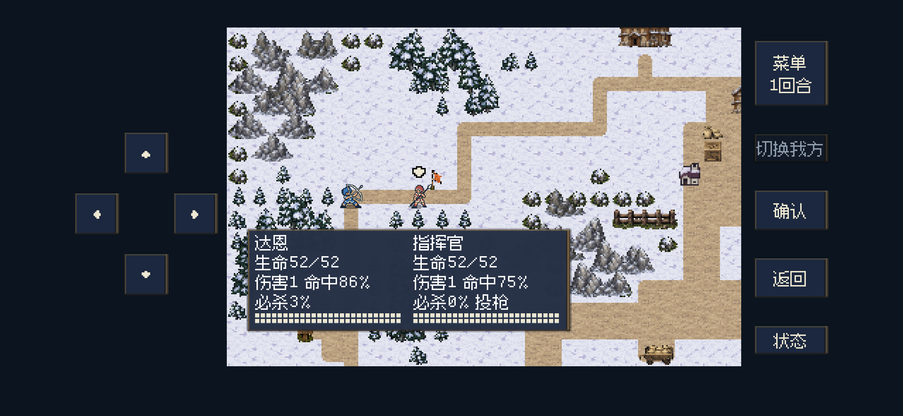
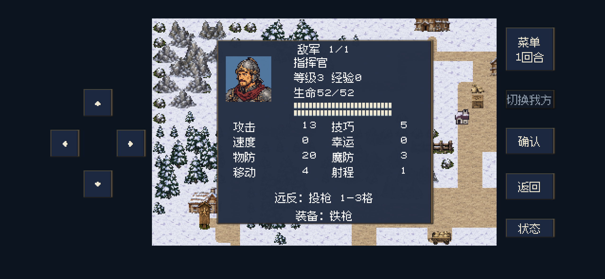
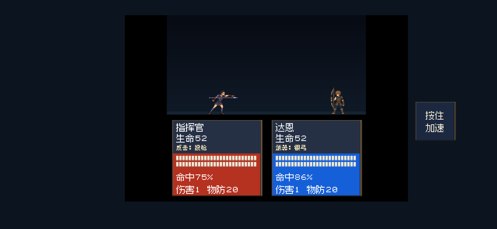
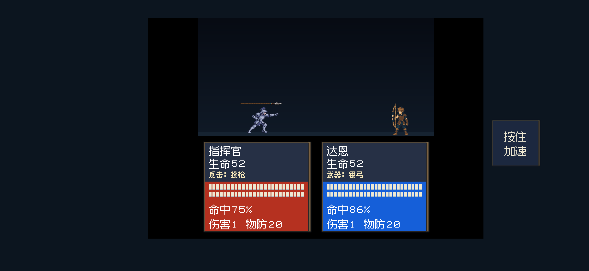
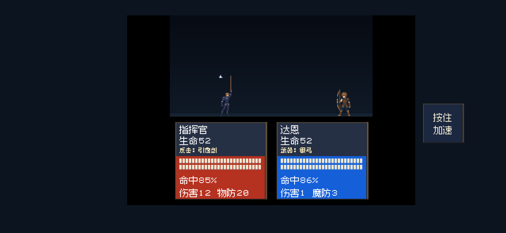
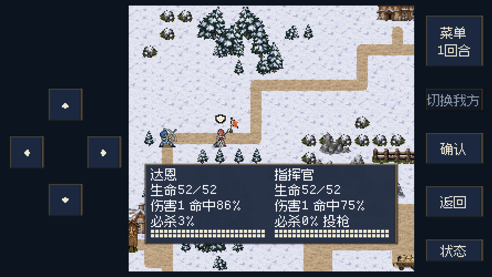

2026-10-29 · 电脑上 Godot 按手机布局后台渲染的实际游戏视口。未安装或更新 iPhone。
292项无窗口检查 + 364项后台呈现检查通过静音验收视频。前段使用P00和D00正式移动控制器；后段使用正式战斗动画选择器逐帧呈现投枪、引霆剑（雷电剑），在接触帧结算一次反击。为便于连续查看，战斗样例固定生命与防御；不用于展示关卡数值平衡，也不是真机录屏。
P00短按一格时也会切换双脚，连续行走使用当前步行时钟。重新开始游戏后，旧剧情时钟不会冻结步行。D00上前阻挡和走近艾琳的移动段使用现有小地图迈步帧，到位后切换抬臂、收势、伸手姿势，保持小体型。




原来的守卫能力只扩展射程，仍使用普通近战武器。现在枪系守卫在远处反击时切换投枪，剑系守卫切换引霆剑（雷电剑）；已有远程装备继续使用原装备。反击预览、状态页、战斗事件、动画与武器名称一致。投枪按物防结算，引霆剑（雷电剑）使用固定攻击力15、按魔防结算。1–3格守卫反击能力保留，主动攻击射程与实际携带物保持原设定。
敌方普通枪兵补绘了4帧举枪、投掷和收势，保留原有27个普通攻击／受击图格。重装兵、骑兵和剑兵继续使用自己的现有投枪、引霆剑（雷电剑）动画。魔物使用自身攻击；石翼兽远反切换碎岩喷吐。每次攻击动作只触发一次接触与结算。






没有剑、斧、枪互相克制的武器三角。当前普通交锋按攻击、物防／魔防、速度、命中和地形等规则结算。另有个别装备的特效，例如骑士杀手对骑兵、钢弓／银弓对飞行单位，以及圣系装备对指定魔物。该特效属于已有规则，本次没有新增武器三角。
投枪新帧由内置 imagegen 按现有蓝紫色枪兵形象绘制，原图与完整提示词保存在工程 source 目录。每张独立新姿势小于20KB。合并动画图集为约102KB，保留原有图格像素和完整动作帧，按质量优先规则保留；尺寸、字节与原因见清单。
| 运行素材 | 尺寸 | 实际字节 |
|---|---|---|
| throw-0.png | 320×256 | 8,388 B |
| throw-1.png | 320×256 | 8,474 B |
| throw-2.png | 320×256 | 7,136 B |
| throw-3.png | 320×256 | 7,073 B |
| spearman-enemy-javelin.png | 5120×512 | 102,014 B |
逻辑检查 · 呈现检查 · 预览分段 · 图片尺寸与质量记录 · 运行图清单 · 完整生成提示词
范围包括单格短按、D00两处移动、距离1／2／3／4的守卫边界、反击预览与真实事件一致、近战与已有远程装备保持、物理／魔法结算、投枪／引霆剑（雷电剑）动作、一次真实接触、状态与两种手机布局。未执行全关卡回归或真机触摸测试。